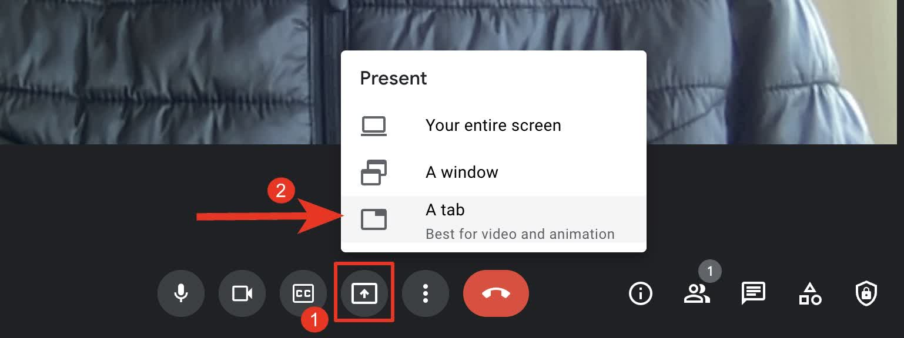
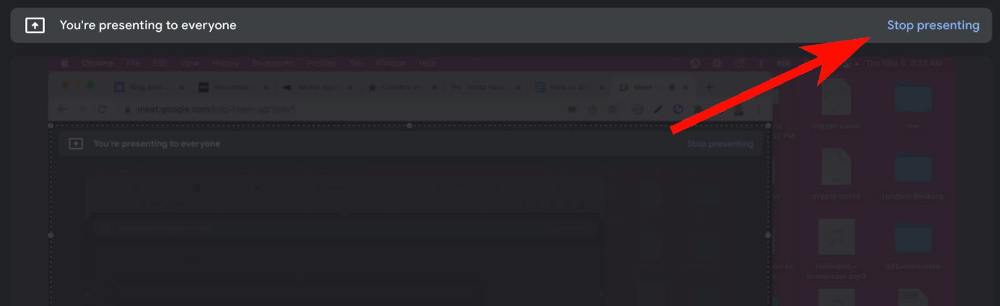
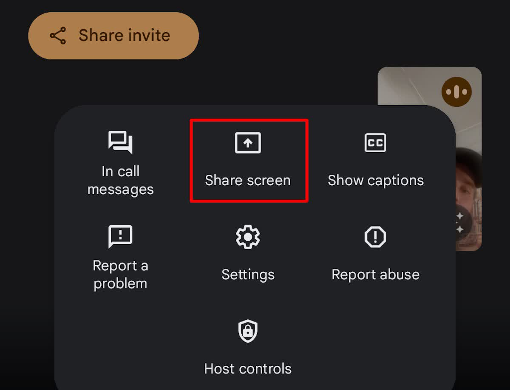
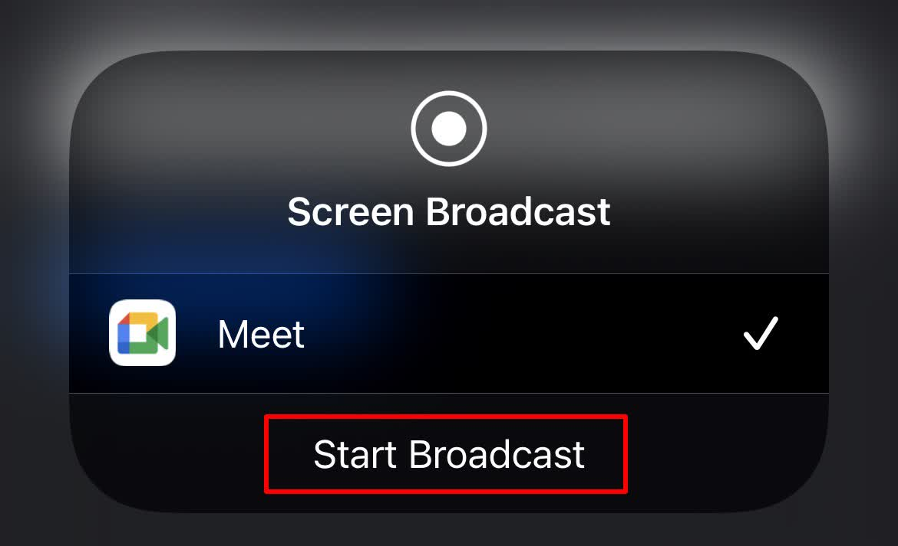

MEETING SETUP
Stagelight
with Google Meet.
Share just the Stagelight tab and its music in Google Meet.
Which app do I need?
Stagelight is a website. There is no Stagelight download to install. “Downloaded app” below means your meeting app.
On a computer, Meet runs in the browser. An installed Meet web app uses the browser too; it is not a separate desktop audio engine. The steps below use Chrome.
Before you share
Use headphones. Close other noisy tabs. Try a music preview first. Share only the window or tab you want attendees to see.
Real screenshots from published tutorials. App versions and example window names may differ; follow the named controls.
Computer: Chrome or installed web app
Open Stagelight in another tab
Keep Meet in one Chrome tab and Stagelight in another. Add your title and music.

Your setup stays in Stagelight. This example has one Audius song selected.Screenshot: Stagelight. Click image to enlarge. Open Present now
Join the meeting. Click the screen-with-arrow button, then choose A tab.

Choose A tab for the Stagelight browser tab.Screenshot: Notta. Click image to enlarge. Choose your Stagelight tab
Select Stagelight from the browser’s tab list. The screenshot uses example tabs; your list will differ.

Select Stagelight from your own tab list. Turn on Also share tab audio, then Share.Screenshot: Tactiq. Click image to enlarge. Enable audio and share
Turn on Also share tab audio, then click Share. The button becomes available after you select a tab.
Select Stagelight from your own tab list. Turn on Also share tab audio, then Share.Screenshot: Tactiq. Click image to enlarge. Begin your countdown
Switch to Stagelight. Click Begin presentation. Ask an attendee to confirm they see and hear it.
Your setup stays in Stagelight. This example has one Audius song selected.Screenshot: Stagelight. Click image to enlarge. Stop presenting
Press Esc in Stagelight to stop its presentation. Return to Meet and click Stop presenting.

Return to Meet and select Stop presenting.Screenshot: Notta. Click image to enlarge.
NO MEETING APP DOWNLOAD
Computer browser
- Keep Meet and Stagelight in separate Chrome tabs. Present the Stagelight tab with audio enabled. Supported devices also offer system audio for a window or whole screen; tab sharing keeps the sound limited to Stagelight.
- Select Stagelight in the browser picker.
- Enable tab audio, then Share.
- Return to Stagelight and begin.
Example Chrome picker shown for Meet. Teams and Zoom use a similar browser dialog with their own site name.
DOWNLOADED MEETING APP + STAGELIGHT IN YOUR BROWSER
Phone or tablet
Android
- Join in the Meet app
- Tap More → Share screen → Start sharing
- Enable the audio checkbox on Present to everyone if available
- Switch to Stagelight in your browser
- Use Stop sharing in Meet to finish.

iPhone & iPad
- Join in the Meet app, then tap More → Share screen and follow the Start sharing or broadcast prompt
- Enable audio if offered
- Open Stagelight in Safari, then return to Meet to stop sharing.

Mobile audio may be unavailable on your device. Google says muting your microphone also stops shared audio. Joining only to present does not share audio.
Test on your device first
These are the meeting provider’s sharing steps. Stagelight playback while switching between mobile apps is not verified. Your phone may pause music or limit screen audio. If that happens, present from a computer.
Mobile sharing can expose your whole screen and notifications. Enable Do Not Disturb and stop sharing before opening anything private.
Based on Google Meet sharing documentation ↗. Button names can vary by version and device.
No sound in the meeting?
If the picture works but sound does not, stop presenting and share the Stagelight tab again with tab audio enabled. Check that this tab is not muted.
This walkthrough uses Chrome tab sharing. Window and whole-screen audio options vary by device. Your meeting host or organization may restrict presenting.
Hearing music locally does not prove the meeting hears it. Ask an attendee before people arrive.
Need another hand?
Find audio fixes or tell us what went wrong.